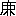

五月のある
晴れた土
曜日の夕
方［＃ルビの「がた」は底本では「かた」］だつた。いつになく元
※［＃「气＜丿」、U+6C15、24-1-2］のいい、明るい
顏付で
勤め先から
帰つて※
［＃「未」の「二」に代えて「三」、24-1-3］たＭ
会社員の青木さんは、山の
手のある
靜かな
裏通りにある
我家の門口をはひると、今まで
胸に
包んでゐたうれしさを一
時に
吐き出すやうにはしやいだ
声で
奧さんの名を
呼んだ。と
奧さんはびつくりした
様子で小
赱りにそこへ
迎へ出て※
［＃「未」の「二」に代えて「三」、24-1-11］た。
「お
帰んなさい。――いつたいまあ
何なの？ いきなりそんな大きな
声をなすつて……」
さうたづねかけながら、
奧さんは女
学生らしさのまだ十分にぬけきらない
若々しい
ひとみを青木さんに
投げかけた。
「いゝ
事、
素適な
事があるんだよ。」
さう
答へて
玄関にあがると、
機嫌［＃ルビの「きげん」は底本では「きけん」］のいい
時にするいつもの
癖で、青木さんは小
柄［＃ルビの「がら」は底本では「から」］な
奧さんの
體を
軽く
引き
寄せながら、その
くちびるに
短い
接ぷんを
與へた。
「まあ、
何んでせう？」
奧さんはたくましい青木さんの
肩に
片手をかけたまゝ
こびるやうにその
顏を
見上げた。
「うむ、
あれさ。
あれをとうとう今日
受けとつて※
［＃「未」の「二」に代えて「三」、24-2-15］たんだよ。」
「
あれつて？」
「ほら、
あれさ。」
「ああ、わかつた。
うれしいわね。――どんな番
号だつて？」
「それがさ、
馬によささうな番
号なんだよ。――ちよつとお
待ち……」
さういひながら、
玄関つゞきの
茶の
間へはひると、青木さんは
紙にくるんだ
額面十円の△△
債劵を
背広［＃ルビの「せびろ」は底本では「せひろ」］の内がくしから、
如何にも大
事さうに
取出した。
「これなんだよ。――ほらね。
ちの一万二千三百七十五
号、
何だかいゝ番
号だらう？」
「
ちの一万二千三百七十五
号、さうね、ほんとにいゝ番
号だわ。」
奧さんは
晴れ
晴［＃ルビの「ば」は底本では「は」］れしく
ひとみを
輝かしながら、
暫らくその
額面に
眺め入つてゐた。
「
何だかあたりさうね。」
「さうなんだ。
僕はその番
号を一目
見た
時、
直感的［＃ルビの「ちよくかんてき」は底本では「ちよ かんてき」］にさう
思つたね。」
青木さんは
興奮した
声でさう
相づち打つた。
「あたつたら、
実際素適だな。」
「
素適以上だわ。――一万二千三百……」
「……七十五
号。
第一、五がつくのなんて半
端［＃ルビの「ぱ」は底本では「は」］な
処がなくて
馬にいいよ。」
「さうね。
ちの一万二千……」
青木さん
夫婦はこの
頃［＃ルビの「ごろ」は底本では「ころ」］にない
張りのある、明るい
※持［＃「气＜丿」、U+6C15、24-3-34］で、
希望と
信頼の
笑顏［＃ルビの「えがほ」は底本では「えかほ」］を
互にぢつと
見交し合つた。
従兄妹同
志で
恋し合つて、青木さんの
境遇にすれば
多少早過ぎもしたのであつたが、
互に
思ひつめた
若々しい
熱情のまゝに
思ひ
切つて
結婚生活［＃ルビの「けつこんせいくわつ」は底本では「けつこんせ くわつ」］にはいつた二人は、まる三年
間を
※［＃「糸＋（舎−口）」、24-3-42］たその
頃になつて、可
成りな
生活難にとらはれてしまつた。といふのは、
少年
時代に両
親に
死に
［＃「死に」は底本では「死」］別れた一人つ子の青木さんは、
僅かなその
遺産でどうにか
修学だけは
済ましたものの、全く
無財産の
身の上だつた。で、
新婚生活は七十円
足［＃ルビの「た」は底本では「あ」］らずの月
給で
始められたが、
間もなく女の子が生れた上に、
世間的な
物價騰貴で、その
後の
暮しはだん／＼
苦しくなるばかりだつた。そしていつとなく青木さん
夫婦は、かつては
夢にも
想像しなかつた
質屋の
暖廉くぐりさへ
［＃「暖廉くぐりさへ」はママ］度重ねずにはゐられなくなつてしまつた。
「いやだいやだ。
僅かな金で月々こんなみじめな
［＃「みじめな」は底本では「みじめた」］思ひをさせられるなんて……」
月
末が
近づくと、青木さんはいつも
暗い
顏付でそんな
事をつぶやきながら、ため
息づいたり、いらだつたりした。そしてそんな
時、人のいい
※［＃「气＜丿」、U+6C15、24-4-19］の
弱い
奧さんは
何の
詞もなくたゞまぶたをうるませてゐるばかりだつた。
相当な
身柄［＃ルビの「みがら」は底本では「みから」］の
家に
育つただけに青木さん
夫婦は
相方共に品のいい十人
並な
容姿の
持主で、
善良な
性格ながらまた
良家の子らしい、矜
持と、
幾らか
見えを
張るやうな
※質［＃「气＜丿」、U+6C15、24-5-5］もそなへてゐた。で、
世間眼にすれば、どこにも
生活に
苦しんでゐるらしい
様子は
感じられないのであつたが、もとより
切りつめた、
地道［＃ルビの「ぢみち」は底本では「ちみち」］な
所帶持などには全くならされてゐない二人にとつては、それだけにその
苦しみや不
快さが一そう
深かつた。とりわけ空
想家で
何かの
趣味道楽なしには生きられない青木さんにとつては、ただ金に
追はれてばかりゐるやうな、あくせくした日々の
生活がむしろのろはしいくらゐだつた。しかし、月
給の上る
見込みもなかつたし、ボオナスも
減るばかりの上に、
質屋や
近しい友
達［＃ルビの「だち」は底本では「たち」］からの
融通［＃ルビの「ゆうづう」は底本では「ゆうつう」］もさうさうきりなしとは
行かなかつた。
結局、このまゝ
暮し
続けて
行くとしたら？ さう
考へた
時、二人は
せうさうをはげしい心に
感じた。
「やつぱり金だ。
少しでも
生活に
余裕のつけられるやうな金が
欲しいな。」
表面にこそ
見せなかつたが、青木さん
夫婦の
頭にはさういふ
思ひがいつも一
杯［＃ルビの「ぱい」は底本では「はい」］だつた。
そこへ
突然一つの
誘惑として
現はれたのが、
政府
発行の△△
債劵を
買ふ
事だつた。それはある日
会社
りの
勧誘員［＃ルビの「くわんいうゐん」は底本では「くわんいう ん」］がすすめて
行つたものだつたが、
額面十円一
等二千円のあたりくじ二本を
最高として
額面倍増の
最低のあたりくじまで
総計二千本、あたらずとも六分
利付で
損なしといふやうな
事が、可
成り空
頼めな
事ながら、一
面空
想家の青木さんの
※持［＃「气＜丿」、U+6C15、24-6-19］を
強く
刺げきした。
悲運な
者にめぐつてくる
時ならぬ
福運、そんな
事までがしきりに
考へられた。そして、
奧さんの
熱心な
賛成を
得た上で、
苦しい内から
漸く工
面して、
非常な
期待とともに
買ひ
求めたのが、
ちの一万二千三百七十五
号といふたつた一
枚の、その△△
債劵なのであつた。
背広［＃ルビの「せびろ」は底本では「せひろ」］を
軽いセルのひと衣にぬぎ
換て、青木さんが
奧さんと一
緒につましやかな
晩さんを
済ましたのはもう八
時近くであつた。青木さんはすぐに
縁の籐イスに
身を
寄せて
煙草をふかしながら、夕
刊を
読みはじめた。やがて
台所［＃ルビの「だいどころ」は底本では「たいところ」］の
片づけ
物を
済ました
奧さんは
次の
間に
寢かしてある子
供［＃ルビの「ども」は底本では「とも」］の
様子をちよつと
見てくると、また
茶の
間へはいつて※
［＃「未」の「二」に代えて「三」、24-6-39］て、
障子
近くに
引きよせた
電燈の下で
針仕事［＃ルビの「はりしごと」は底本では「はりしこと」］にとりかゝつた。
靜かなよひで、どことはなしに青
葉の
香をにほはせたかぐはしい
夜風が
庭先から
流れてくる。二人の
間にはそのまま
暫らく
何の詞も交されなかつた。
「ほんとに
※持［＃「气＜丿」、U+6C15、24-6-46］のいゝ
晩だな。」
間もなく夕
刊を
縁に
投げ出した青木さんはさうつぶやきながら、
奧さんの
方を
振り
返つた。
「ええ、ほんとにね……」
奧さんは
針の
手を休めて、
靜かに
答へた。
刹那に、二人の口元には
何とない
微笑が
流れあつた。さつきまでの
※持［＃「气＜丿」、U+6C15、24-7-9］の
興奮はいつとなくさめかかつてゐたが、それは心のどこかにまだほのかな明るさを
投げてゐた。そして二人は
暗默の内にもお
互が
何物かの中にぴつたり
とけあつてゐるやうな、その日
頃［＃ルビの「ごろ」は底本では「ころ」］にない甘い、しみじみした幸
福感をそれぞれに
感じてゐた。
言葉はそれなりに
途切［＃ルビの「とぎ」は底本では「とき」］れて、青木さんは
庭の
暗やみの
方に
眺め入り、
奧さんは
針の
手を
再び
動かしはじめた。
「でもね、あなた？」
やがて
奧さんはまた口を
切つた。
「
何？」
「
あれ、ほんとにあたるでせうか？」
「さあ、そりや分らない。すべては
運命の
神様の
御意のまゝなんだからな。」
青木さんはちよつと
さびしさうな
表情でいつた。
「だつて……」
「いや、だからさ。
僕はやつぱりあたるものと
信じるな。
信じるだけでも、今の
僕達には
楽しいんだからね。ははははは……」
青木さんはうつろな
声で
笑つた。
［＃「笑つた。」は底本では「笑つた」］
「ええ、そりやほんとにさうね。」
奧さんは一心に
針を
動かしながら、うつ向いたままさういつた。
「でも、
若しほんとにあたつたら
［＃「あたつたら」は底本では「あつたら」］？
「そりやうれしいね。
飛びあがつて、
※※［＃「气＜丿」、U+6C15、24-7-42］［＃「二点しんにょう＋麦」、24-7-42］ひのやうにおどりまはるかも
知れないよ。」
青木さんの
声は
何となく上ずつてゐた。そして、わざとらしいはしやぎ
方で
身體をゆすぶりながら
笑つた。
「だがね、うれしいどころか、
反対に
凄くなりやしないか
知ら？ 一
等だと二千円――
僕の二年分の
給料以上のお金がいきなり懷に
飛びこんでくる……」
そこで
言葉［＃ルビの「ことば」は底本では「ことは」］を
途切［＃ルビの「とぎ」は底本では「とき」］つて、青木さんは不
意に
眞顏［＃ルビの「まがほ」は底本では「まかほ」］になりながら、ぢつと
奧さんの
顏を
見詰めた。
「
何だかこはいやうね。――さうさう、いつかあつたぢやないの？ 千円かの
無尽にあたつて
発狂したといふおぢいさんが……」
「はははは、
僕達はそんなに
※［＃「气＜丿」、U+6C15、24-8-14］が小さかあない。しかしいいな。今それだけのお金があつたら……」
「ほんとにさうね。あたしお
借りしてある
方のを、一番にお
返ししたいわ。」
奧さんは
針の
手を
無意識なやうに
膝に休めて、ほの白んだ、硬
張つた
顏を青木さんの
方に向けながら、
眞劍な
声でいつた。
「そりや
無論だね。」
青木さんは
強く
相槌
打つた。
「それから、あなたどうなすつて？」
「さあ、ヴイクタアを
買ふね。
武井の
持つてるやうな……」
「ええ、ヴイクタアはいいわ。ずゐぶん
欲しがつてらつしやるんだから。――あたし、
何にしようか
知ら？」
「君の
欲しいのはやつぱり
着物かな？」
「あら、
着物なんかいらなくつてよ。――さうね、あたしの今一番
欲しいのは上
等の乳母
車よ。ほらキルビイさんのお
宅にあるやうな。あたし
※［＃「晋」の「一／日」に代えて「麁−々」、U+4D21、24-8-39］子をあんなのに
乘せてやりたいわ。」
「しかし、乳母
車［＃ルビの「ぐるま」は底本では「くるま」］なんてお
安い
御用さ。」
［＃「御用さ。」」は底本では「御用さ。」］
「それから、
柳のイスやテエブルを一
組と、
茶だんすのいいのを
欲しいわね。」
［＃「欲しいわね。」」は底本では「欲しいわね。」］
「さうださうだ。イスやテエブルは
第一番だな。だが、さうなると、
紅茶器なんかの上
等も
欲しくなる……」
「あら、それぢやきりがないわね。」
奧さんは朗かな
声で
笑つた。
そのまま
暫らく
詞は
途切［＃ルビの「とぎ」は底本では「とき」］れた。青木さんも
奧さんも明るい、
楽しげな
表情で、
身動きもせずに
考へこんでゐた。
「でもね、
美奈子。二千円あつたら、どうにか
家が
建てられるかも
知れないよ。そしてそんな一つ一つの品
物なんかよりも、
考へてみりや、その
方がずつと
根本
的な
事だと
思ふ……」
「ああ、ほんとにさうだわ。
幾ら
道具が
立派［＃ルビの「りつぱ」は底本では「りつは」］だつたつて、こんな
家ぢやあね……」
奧さんはあたりを
見まはしながらさういつてやんちやらしくひよいと
首をすくめた。
「で、
建てるとなると、やつぱり
郊外ね。」
「うむ、そりやさうだとも。大井だの目
黒［＃ルビの「ぐろ」は底本では「くろ」］だの。
僕すきだな。あすこら
辺のちよつと
高みに、バンガロオ
風の
家でも
建てられたら、どんなにいいか
知ら？」
「とても
素適だわ。」
奧さんは
高く
声をはづませた。
「全く
惡くないね。
間数はと？
僕の
書斎兼用の客
間に君の
居間、
食堂に四
疂半ぐらゐの子
供［＃ルビの「ども」は底本では「とも」］部屋［＃ルビの「べや」は底本では「へや」］が一つ、それで
沢山だが、もう一つ
余分な
部屋が二
階にでもあれば申分なしだね。そして
庭はなるたけ
広くとつて芝生にする。花
壇をこしらへる……」
「あたし、
野菜畑［＃ルビの「やさいばたけ」は底本では「やさいはたけ」］も
作りたいわ。」
「いいね。
普通の
野菜物は
無論として、
外にトウモロコシだのトマトウだの、トマトウのとり
立てつて、ほんとにおいしいからな。」
「さうね。それからダリヤも
思ひつ
切り
植てみたいわ。」
「うむ、六七月
頃になると、それを
切花にして客
間に
飾る……」
「ああ、どんなに
奇※［＃「晋」の「一／日」に代えて「麁−々」、U+4D21、25-3-28］でせう？」
奧さんは
黒未勝ちな、
若々しいひとみを
夢見るやうに
見張りながら、
晴れやかにつぶやいた。
言葉［＃ルビの「ことば」は底本では「ことは」］はまた
暫らく
途切［＃ルビの「とぎ」は底本では「とき」］れた。と、
程近くのイギリス人の
家でいつとなく
鳴りはじめたピヤノの
音が、その
沈默をくすぐるやうに
間遠に
聞こえて※
［＃「未」の「二」に代えて「三」、25-3-36］た。それに
聞くともなく耳を
傾けながら、青木さんは
靜に
煙草をふかし、
奧さんは
針の
手を休めたまま、
互にうつとりと今までの空
想の
跡を
追つてゐたが、その空
想はなぜかだんだんに
影を
薄めて
行つた。そして、二人の
意識の中にはたつた三
間しかない古びた
貸家である自分の
家が、ほんとに
猫の
額ほどの
庭が、やつとの
思ひで古
道具屋から
買つて※
［＃「未」の「二」に代えて「三」、25-3-46］たただ一
脚のトイス
［＃「トイス」はママ］が、いや、あまりにもそれとかけ
隔たつたさういふみじめな
現実のすべてがうつすりとよみがへつて※
［＃「未」の「二」に代えて「三」、25-4-4］た。
「さうさう、それからねえ……」
やがて青木さんはその冷やかな
現実の
意識を
逃れようとするやうに、
新たな空
想をゑがきながら、
奧さんを
振返［＃ルビの「ふるかへ」はママ］つた。
「
何？」
「さうなつたら、
何か小鳥も
飼はうぢやないか？ カナリヤ、目白、
［＃「目白、」は底本では「目白」］いんこ……」
「ええ、それもいいわね」
奧さんの
声にはもう
何となく
張りがなかつた。そして、そのままひざに
視線を
落すと、
思ひ出したやうにまた
針の
手を
動かし
始めた。
「しかし、いいな。
若しすべてがそんな
風に
行つたら、ほんとにどんなに
楽しい、どんなに
美しい
生活だか
知れないな。――一日でもいいから、たつた二日でもいいから……」
青木さんはふと一人
言［＃ルビの「ごと」は底本では「こと」］のやうにさうつぶやいて、
軒先に
見える
晴れた
夜空をぢつと
見上げた。が、さういふ空
想の明るさとは
反対に
※持［＃「气＜丿」、U+6C15、25-5-13］は
妙に
暗く
沈んで
行つた。
奧さんは青木さんのさういふ
※持［＃「气＜丿」、U+6C15、25-5-14］をすぐに
感じた。そして、青木さんの
横顏に――
夜やみの中に
浮んでゐるくつきりした
横顏にちらと
視線をそゝいだが、すぐに
眼をしばしばさせて、くちびるをかみながらまたうつ向いてしまつた。
「しかし、そりやさうとして、
何とか
くじがあたらないものかな？ 今の
僕達には
何等だつて
構はないんだ。ねえ、さうだらう？」
青木さんは不
意に
奧さんの
方を
見返つた。
「ええ。――ですけれど、もうそんな
話しよしませう。あたし
何だか……」
奧さんはうつむいた
侭いつた。
「どうしたの？」
「いいえね。
幾ら
思つてみても、そんな
事、あたし
達には
駄目なんですもの……」
奧さんはかすれたやうな
声で
答へながら、青木さんの
顏を
見上げた。
その
せつ那に、
奧さんの
まぶたに一
杯［＃ルビの「ぱい」は底本では「はい」］にじんでゐた
涙にひよいと
※［＃「气＜丿」、U+6C15、25-6-8］がつくと、今まで
何※［＃「气＜丿」、U+6C15、25-6-8］［＃ルビの「なにげ」は底本では「なにけ」］なさを
装つてゐた青木さんの心は
思はずよろめいた。青木さんはあわててイスから
立ち上つた。が、すすり
泣きはじめた
奧さんの
肩に
手をかけると、また心をとり
直しながら、力
強く、
慰めるやうにその耳元にささやいた。
「そ、そんな
事考へちやいけない。
僕達はせめてさういふ
夢でも
楽しんでゐたいぢやないか。――それにまた、
思ひ
掛ない巡り
合せで、人にはどんな
好運が向いて※
［＃「未」の「二」に代えて「三」、25-8-4］ないとも
限らないからね……」
ヽヽヽヽヽヽヽ
それから半年ほどたつた
時、
ちの一万二千三百七十五
号の△△
債劵は
仲買［＃ルビの「なかがひ」は底本では「なかかひ」］人を
※［＃「糸＋（舎−口）」、25-8-9］て、ある田
舍の大
地主［＃ルビの「ぢぬし」は底本では「ちぬし」］の
手に
渡つてゐた。青木さん
夫婦は
僅かな金の
融通［＃ルビの「ゆうづう」は底本では「ゆうつう」］のために
仕方なく
手離したのであつたが、それが
間もなく五
等百円のくじにあたつた
事は
無論知るはずもなかつた。
―一四・四・一八―